BasisTransformationWF¶
About the BasisTransformationWF class¶
The WaveBlocks Project
@author: R. Bourquin @copyright: Copyright (C) 2010, 2011, 2012, 2013, 2014 R. Bourquin @license: Modified BSD License
Inheritance diagram¶
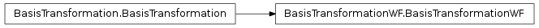
Class documentation¶
- class WaveBlocksND.BasisTransformationWF(potential, grid=None)¶
This class implements basis transformations of wavefunctions 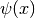 between the canonical basis of and the basis 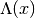 spanned by the eigenvectors 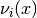 of the potential 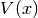.
- __init__(potential, grid=None)¶
Create a new BasisTransformation instance for a given potential matrix .
Parameters: - potential (A MatrixPotential instance.) – The potential underlying the basis transformation.
- grid (A Grid subclass instance.) – The grid.
- set_grid(grid)¶
Set the grid 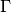 containing the nodes 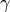 on which the wavefunction 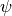 was evaluated. The
 eigenvectors
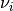 will be evaluated on the same grid nodes.
eigenvectors
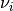 will be evaluated on the same grid nodes.Parameters: grid (A Grid subclass instance.) – The grid
- transform_to_canonical(wavefunction)¶
Transform the evaluated wavefunction 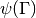 given in the eigenbasis to the canonical basis.
Parameters: wavefunction (A WaveFunction instance.) – The wavefunction to transform. Returns: Another WaveFunction instance containing the transformed wavefunction 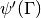.
- transform_to_eigen(wavefunction)¶
Transform the evaluated wavefunction given in the canonical basis to the eigenbasis.
Parameters: wavefunction (A WaveFunction instance.) – The wavefunction to transform. Returns: Another WaveFunction instance containing the transformed wavefunction .